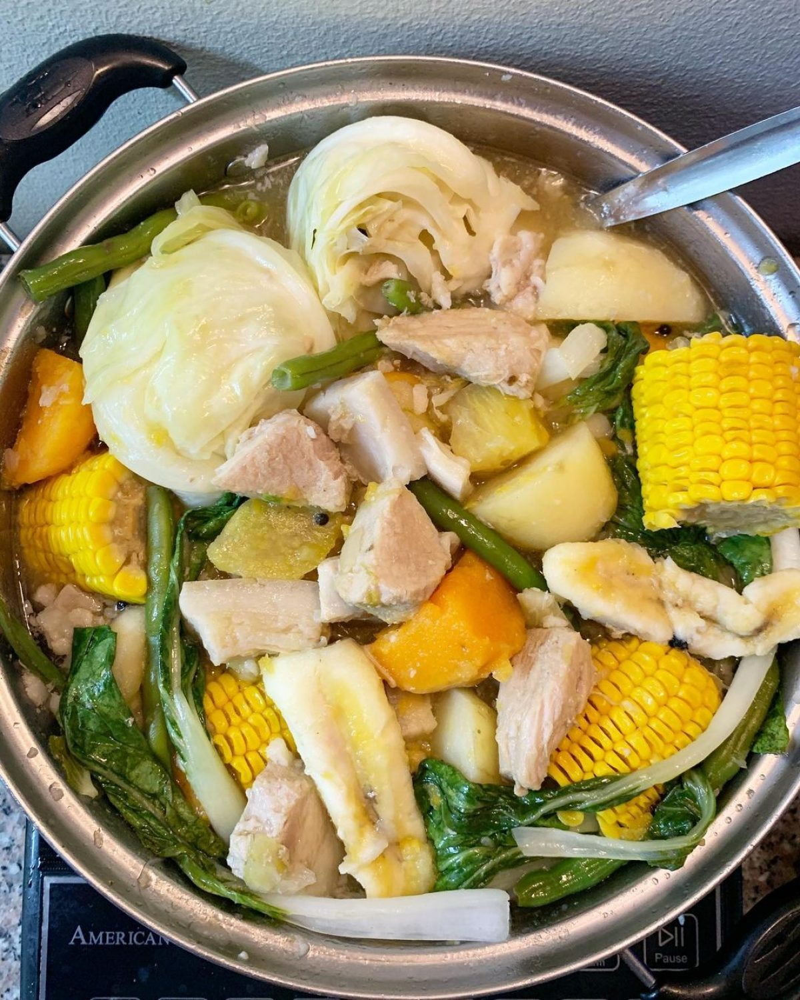

Nilagang Baboy
Nilagang Baboy or Pork Nilaga is translated as boiled pork in Filipino.
This is a soup dish commonly served for lunch or dinner on regular days.
Nilagang Baboy is eaten with steamed white rice and is best served with patis
(fish sauce) and siling labuyo (birds eye chili).
Ingredients
- Pork Belly or Shoulder (Cubed)
- Salt
- Whole Peppercorn
- Water or Beef broth or Pork broth
- Ripe Saba Banana (Sliced in half crosswise)
- Yellow onions
- Potatoes (Cubed)
- Cabbage
- Cooking Oil
How to Cook:
- Heat the cooking oil in a deep cooking pot.
- Sauté the onion and peppercorn
- Put-in the pork. Cook until the color turns light brown.
- Pour-in the water or beef or pork broth. Bring to a boil. Simmer for 45 to 60 minutes or until the pork becomes tender.
- Add the saba banana and potatoes. Stir and cook for 12 minutes.
- Put-in the cabbage. Add salt to taste. Stir. Cover and continue to cook for 3 minutes.
- Serve and Enjoy!